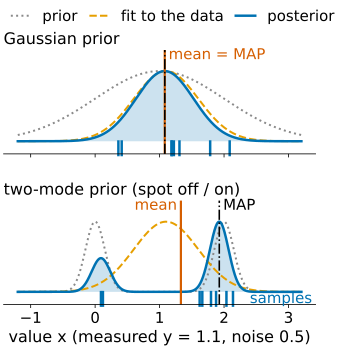
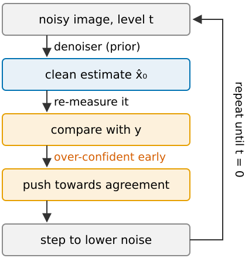
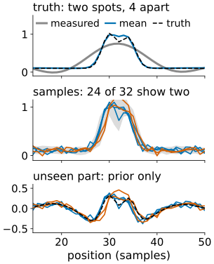
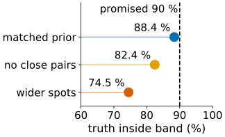

If a diffusion model restores, deblurs or “virtually stains” my image, which parts of the result were measured and which were imagined?
Slides titled The math give the formulas and proofs; the ideas are complete without them.
From regularisation and deconvolution: minimise data term + λ·penalty. Read probabilistically, that is the most probable image (MAP) under a hand-made prior (“smooth”, “small”), with λ = noise variance / prior variance; λ chosen by the discrepancy principle (residual as large as the noise).
From Diffusion models and generated detail: with a generative prior, the mean is blurry where unsure and has the lowest error; a sample is sharp everywhere, with twice the error, and its detail where the data are weak comes from the prior.
Replace “smooth” by “images like the training images” (a diffusion model). Then
For a Gaussian prior all three coincide with Wiener/Tikhonov. With a realistic prior (cells, spots, membranes) they separate, and the choice matters for what you may measure.

The posterior’s score = prior score + measurement score (Bayes, as in the introduction). The prior part is the trained denoiser; the measurement part at a noisy intermediate is unknown.

\nabla\log p_t(\mathbf x_t\mid\mathbf y) = \nabla\log p_t(\mathbf x_t) + \nabla\log p_t(\mathbf y\mid\mathbf x_t),\qquad p_t(\mathbf y\mid\mathbf x_t) = \int p(\mathbf y\mid\mathbf x_0)\,p(\mathbf x_0\mid\mathbf x_t)\,d\mathbf x_0.
Linear measurement \mathbf y = A\mathbf x_0 + \mathbf n, \mathbf n \sim \mathcal N(0, \sigma_n^2I). For a Gaussian prior, p(\mathbf x_0\mid\mathbf x_t) is Gaussian with mean \hat{\mathbf x}_0 = \mathbb E[\mathbf x_0\mid\mathbf x_t] and covariance C_t, so exactly
p_t(\mathbf y\mid\mathbf x_t) = \mathcal N\big(\mathbf y;\ A\hat{\mathbf x}_0,\ \sigma_n^2I + A\,C_tA^\top\big).
The common approximation keeps the mean and drops A\,C_tA^\top: p_t(\mathbf y\mid\mathbf x_t) \approx \mathcal N(\mathbf y; A\hat{\mathbf x}_0, \sigma_n^2I). At high noise C_t is large, so the dropped term is large: the push is far too strong (over-confident) early on. Replacement for A = “keep some pixels” and noise-free \mathbf y: the measured coordinates of \mathbf x_t are exactly \sqrt{\bar\alpha}\,\mathbf y + \sqrt{1-\bar\alpha}\,\boldsymbol\varepsilon; the approximation is only in how they couple to the unmeasured ones (and with noisy \mathbf y, in treating it as exact).
Split every image into the part the measurement sees and the part it cannot (the null space: invisible objects, frequencies beyond the cut-off).

Let A keep some coordinates in a basis (low frequencies, measured pixels) and P_0 project onto the others (the null space): AP_0 = 0.
genrestore’s “prior without dividing cells”).
Predict a fluorescence channel from a transmitted-light image, trained on pairs. The target channel is not measured at all: the prediction is the prior’s view of “what the stain usually looks like in cells that look like this”.